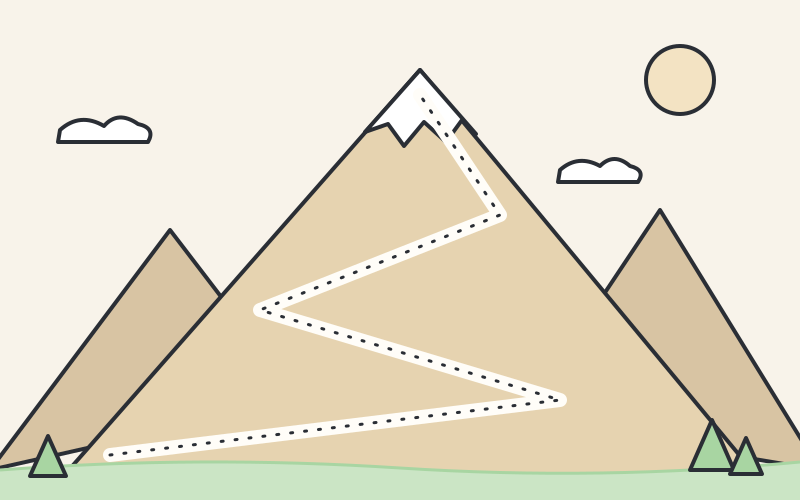

Étape 1 sur 4
Le navigateur
Vous tapez monsite.be dans la barre d'adresse de votre navigateur.
Chaussez vos chaussures de marche : direction les sommets, pour découvrir comment un simple nom nous mène jusqu'au bon site.
On grimpe ? Je connais un sentier qui mène tout en haut !

Un nom de domaine est une adresse unique et lisible qui permet d'identifier et d'accéder facilement à un site Internet. Il remplace à nos yeux l'adresse IP du serveur, et il est traduit en adresse IP pour les machines grâce au système DNS.
Pour mieux comprendre, prenons l'exemple d'un téléphone. Pour appeler votre maman, vous devez composer son numéro. Mais retenir le numéro de chaque personne, ce serait impossible ! Vous l'enregistrez donc sous le nom « Maman ».
Le DNS, c'est un peu comme un annuaire géant : quand vous tapez
le nom d'un site, il le traduit en numéro pour trouver le bon serveur.
Suivez le voyage de l'adresse monsite.be jusqu'au sommet !

Étape 1 sur 4
Vous tapez monsite.be dans la barre d'adresse de votre navigateur.
Étape 2 sur 4
Le navigateur demande à l'annuaire DNS : « Quel est le numéro de
monsite.be ? »
Étape 3 sur 4
Le DNS trouve la réponse et la renvoie : c'est l'adresse IP du serveur,
192.0.2.14.
Étape 4 sur 4
Le navigateur contacte ce serveur, qui lui envoie la page : elle s'affiche à l'écran !
On ne devient jamais propriétaire d'un nom de domaine pour toujours : il se loue, généralement à l'année. On parle alors de réservation ou d'enregistrement. Si on oublie de renouveler la location, quelqu'un d'autre peut le réserver.
L'extension est la fin du nom de domaine (.com,
.be…). Elle donne une indication sur le type de site. Retrouvez
chaque extension et sa signification !
0 coup · 0 paire sur 8
Bravo, vous avez atteint le sommet des extensions !
Il existe aujourd'hui plus de 1 200 extensions thématiques. Certaines désignent une activité, d'autres une ville, une région, ou même une marque :